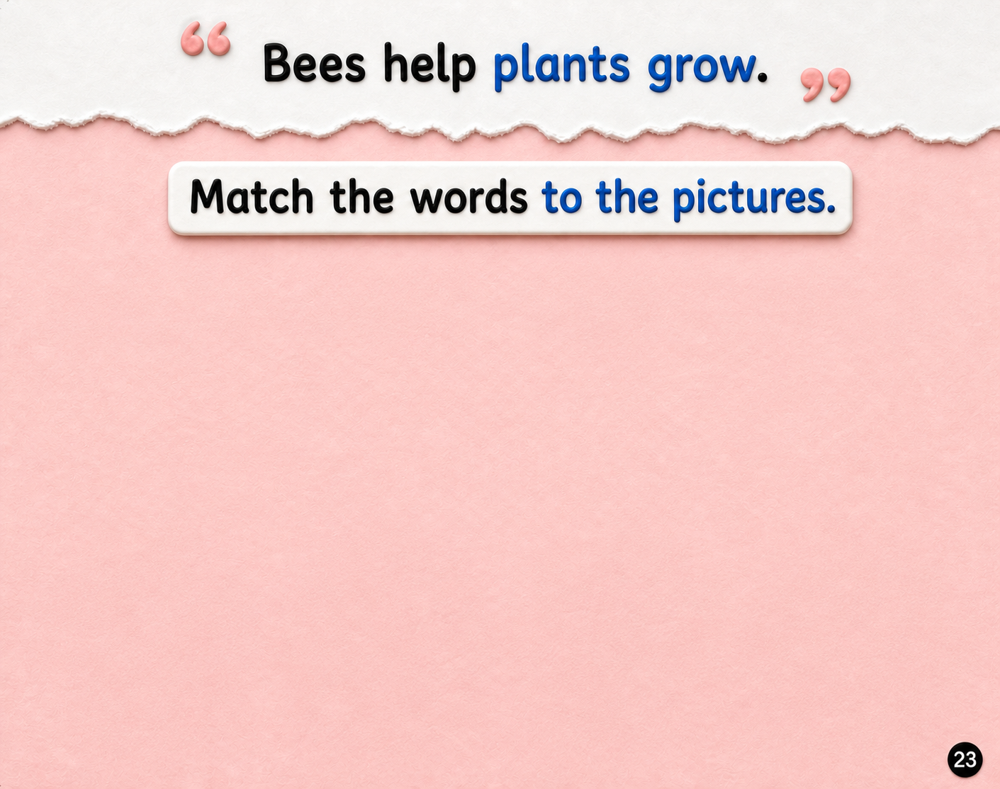

Week 3 — Why do we need bees?

flowers
trees
vegetables
fruits
Press Start Activity to begin.
Drag a word or picture onto its match, or tap one and then the other.

Press Start Activity to begin.
Drag a word or picture onto its match, or tap one and then the other.